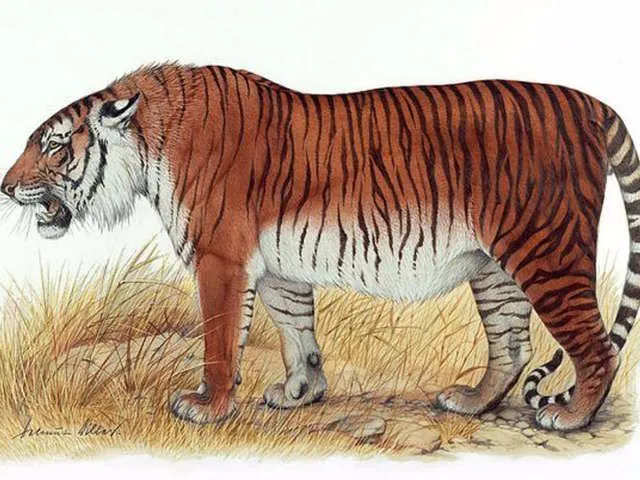

Panthera tigris altaica - hổ Siberi hay hổ Amur, hổ Mãn Châu.
Hổ từng có mặt ở khắp các tỉnh miền núi Việt Nam. Hiện nay chỉ còn ở các tỉnh có rừng núi hẻo lánh thuộc biên giới Việt – Lào, Lâm Đồng, Nghệ An, Quảng Trị. Độ che phủ rừng ở Việt Nam đã bị giảm xuống dưới 15% so với ban đầu trước những năm 1940, do chiến tranh, khai thác gỗ bất hợp pháp, và đốt rừng để phát triển nông nghiệp. Hổ được bảo vệ hợp pháp ở nước này từ năm 1960, nhưng việc buôn bán các bộ phận cơ thể hổ vẫn tiếp tục đến giữa những năm 1990. Hổ vẫn còn hiện diện ở miền bắc Việt Nam giáp Trung Quốc vào những năm 1990. Kể từ năm 2015, quần thể này được coi là có khả năng tuyệt chủng. Tại Lào, Khu bảo tồn đa dạng sinh học quốc gia được thành lập vào năm 1993. Vào thời điểm đó, dân số hổ đã cạn kiệt. Đến cuối những năm 1990, hổ vẫn có mặt ở ít nhất năm khu vực bảo tồn. Săn hổ để buôn bán bất hợp pháp các bộ phận cơ thể và săn bắt cơ hội được coi là mối đe dọa chính đối với quần thể hổ của đất nước. Năm con hổ riêng lẻ đã được ghi nhận tại Khu bảo tồn quốc gia Nam Et-Phou Louey trong cuộc khảo sát bẫy camera giữa tháng 4 năm 2003 và tháng 6 năm 2004. Con mồi hoang dã lớn xuất hiện với mật độ thấp buộc hổ phải săn con mồi nhỏ và gia súc, có thể ảnh hưởng tiêu cực đến sinh sản của chúng. Ở Campuchia, hổ vẫn được nhìn thấy ở những khu vực rừng hẻo lánh vào giữa những năm 1980. Các khu vực được bảo vệ được thành lập vào năm 1993, nhưng các khu rừng rộng lớn bên ngoài các khu vực này đã được đưa ra như một sự nhượng bộ khai thác gỗ cho các công ty nước ngoài. Một cuộc khảo sát phỏng vấn được thực hiện giữa các thợ săn vào mùa xuân năm 1998 cho thấy sự hiện diện của hổ trong chín khu vực bao gồm Phnom Kravanh và dãy núi Dâmrei. Trong các cuộc điều tra bẫy ảnh được thực hiện từ năm 1999 đến 2007 tại chín khu vực được bảo vệ và hơn 300 địa điểm trên cả nước, hổ chỉ được ghi lại trong Khu rừng được bảo vệ ở Mondulkiri và trong Vườn quốc gia Virachey. Do đó, quần thể hổ của Campuchia được coi là cực kỳ nhỏ. Kể từ năm 2015, chúng được coi là có thể bị tuyệt chủng. Ở Thái Lan, rừng được bảo vệ bằng cách thành lập 81 vườn quốc gia, 39 khu bảo tồn động vật hoang dã và 49 khu vực cấm săn bắn trong khoảng thời gian từ 1962 đến 1996, bao gồm 12 khu vực được bảo vệ rộng hơn 1.000 km2 (390 dặm vuông). Khai thác rừng đã bị cấm vào năm 1989. Mặc dù mạng lưới khu vực được bảo vệ rộng rãi này, hổ đã được ghi nhận ở 10 trong số 17 khu phức hợp được bảo vệ trong các cuộc khảo sát trên toàn quốc từ năm 2004 đến năm 2007. Mật độ hổ thấp hơn dự đoán dựa trên môi trường sống có sẵn của rừng. Quần thể hổ ở Myanmar bị giới hạn ở Vùng Tanintharyi và Khu bảo tồn hổ thung lũng Hukawng năm 2006.

Panthera tigris amoyensis - hổ Hoa Nam.
Ở bán đảo Mã Lai, hổ chỉ xuất hiện ở bốn khu vực được bảo vệ rộng hơn 400 km2 (150 dặm vuông). Ở Sumatra, quần thể hổ trải dài từ các khu rừng đầm lầy than bùn ở vùng đất thấp đến các khu rừng trên núi gồ ghề.
Panthera tigris balica - hổ Bali (tuyệt chủng).
Các vằn của phần lớn các nòi hổ dao động trong khoảng nâu/xám tới đen thuần, mặc dù hổ trắng có rất ít các vằn. Hình dạng và mật độ các vằn thay đổi theo từng nòi, nhưng phần lớn các nòi đều có trên 100 vằn. Hổ Java nay đã tuyệt chủng có thể có nhiều hơn. Các mẫu vằn là duy nhất cho từng cá thể, và vì thế có thể sử dụng để xác định từng cá thể giống như mẫu vân tay ở người. Tuy nhiên điều này không phải là phương pháp được ưa thích để xác định, vì sự khó khăn trong việc ghi chép các mẫu vằn của hổ hoang dã. Mục đích của các vằn có lẽ là để ngụy trang, giúp chúng coi là ẩn đối với các con mồi (có rất ít các loài thú có cảm giác màu như con người, vì thế màu sắc chưa hẳn đã là vấn đề quan trọng như người ta vẫn nghĩ).